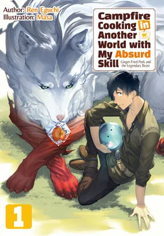

Mukouda Tsuyoshi was nothing special in modern Japan, so when he was summoned to a world of swordplay and sorcery, he thought he was ready for the adventure of a lifetime. Too bad the kingdom that summoned him only got him by mistake! Not only was he not one of the three summoned heroes, but his stats were laughable compared to theirs. On top of that, there's something really sketchy about this kingdom... "Ah, these people are the kind to try and use the Hero," he realized, and immediately left to make his own way in this other world. The only thing Mukouda can rely on is his unique skill: the "Online Supermarket," a skill that allows him to buy modern goods in a fantasy world. It's useless for combat, but if he plays his cards right, he could lead a comfortable life, maybe? At least, that's what Mukouda thinks, but it turns out modern food bought with this skill has some absurd effects! What happens when Mukouda introduces ridiculously tasty modern cooking to a fantasy world like this? He gets some ridiculous repeat customers begging for more...!